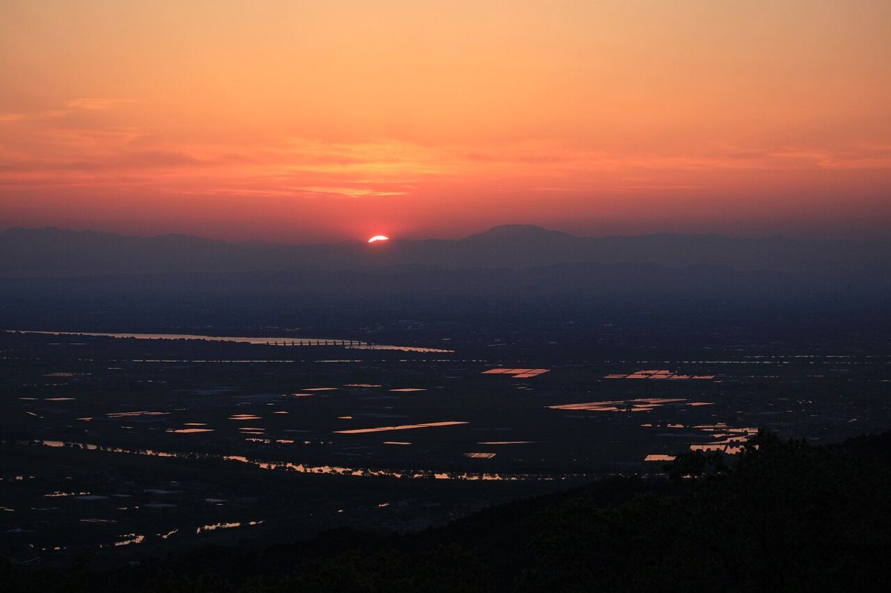
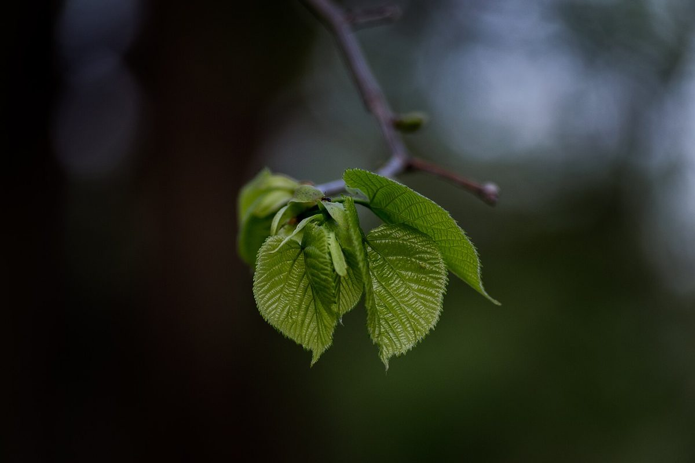
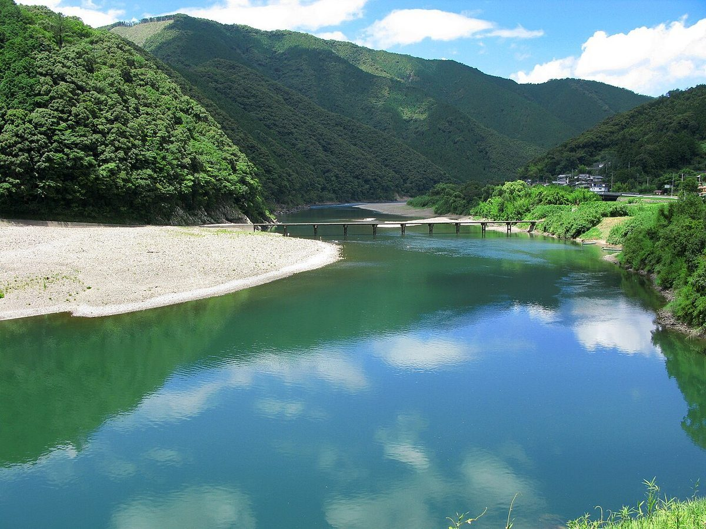
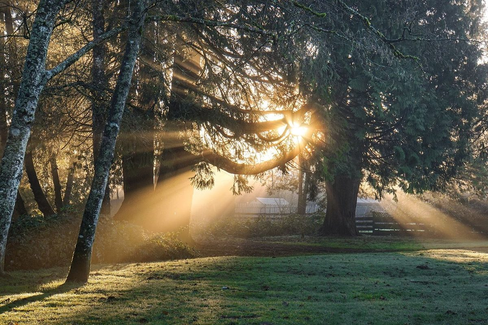

徳島県鳴門市 ／ カフェ
nook stand
朝の色から夜の色へ。
空がゆっくり変わるように、ページの色も上から下へ移っていきます。
この見せ方は制作側の案です

01お店の情報
- 店名
- nook stand
- 住所
- 徳島県鳴門市撫養町小桑島前組132
- 営業時間
- 準備中（お問い合わせください）
- 定休日
- 準備中（お問い合わせください）
- @nook_stand



写真は一日の空と緑をイメージしたもの。お店の様子を表すものではありません。
02ページのご案内
最新のようすはInstagramで
営業日や最新の情報は、お店のInstagramまたはお電話でご確認ください。